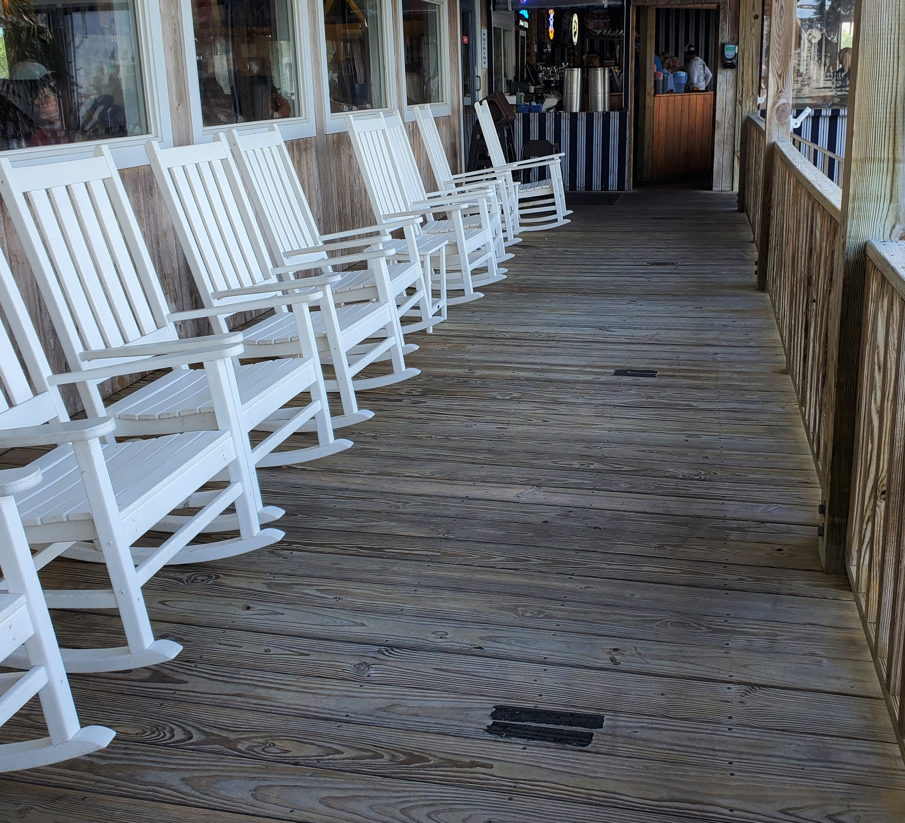
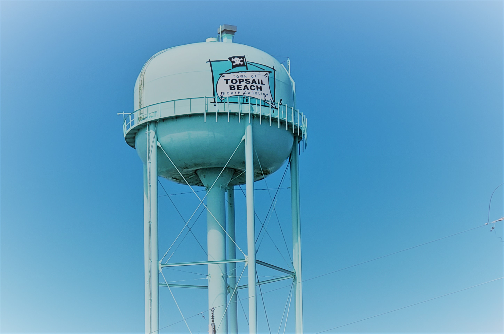

|
|||
| Home | Hobbies | Travel | Contact Me |
|
||
Who doesn't love a cozy cottage by the beach? Topsail Beach is located on Topsail Island, N.C. The island is accessible by taking the Surf City Bridge. On the island, you have North Topsail, Surf City, and Topsail Beach. We stayed at The Pink Cottage on Topsail Beach. The cottage is a few steps away from the sound and across from the beach and the ocean! It is a quiet street and the house is surrounded by trees, giving it a private feel even with the deck facing the street. The owners even have beach gear to use if you left your stuff at home! The sound, which you can see below at sunset, is a great place to go kayaking or sit on the dock to watch the sunset (or rise if you like getting up super early). If you like a quiet cozy area to relax with the family, I highly recommend The Pink Cottage! |
||
Even though The Pink Cottage has a full kitchen and a grill to use, you come to the beach for some awesome seafood. One of our favorite places to go is Sears Landing, located down the road in Surf City, N.C. They are open from 8 A.M. for breakfast until roughly 9 P.M. Sears Landing is located on the water and has a beautiful dockside area & deck. You are able to drive your boat up, dock & come get a quick bite or a drink. The view is lovely and the service was awesome (even with them being super busy for dinner). If you love seafood, definitely get the Seafood Combination Plate (the crab cakes are amazing here). Don't like seafood, the cheeseburger is amazing & my son loves their chicken fingers and fries. They also have amazing homemade cornbread and sauces to pair up with your meal. They have a decent beer, wine, and drink selection if you like to have an adult beverage. If not, they have soda, tea & coffee. You will not be disappointed! |
||
|  | ||
Need a break from the sand, surf, and swimming in the ocean? Then come take a break on the Jolly Roger Pier! This pier extends over 800 feet into the ocean and is a popular place to relax and fish. The pier is part of the Jolly Roger Inn & requires a pier ticket to access if you are not staying at the inn. If you stay at The Pink Cottage, you will have a pass to use to get on the pier. There is a small store attached to the pier as well as other little local shops within walking distance of the pier, including a cute coffee shop! |
||
 |
 | My son clearly had a lot on his mind here... He loves listening to the waves and just relaxing on the pier. |
| Want a fun, family friendly activity to do during the afternoon? How about a romantic tour of the Intra-coastal Waterway and the back of Topsail Island? What about a sunset luau? Then you HAVE to check out Tiki Tours in Surf City, NC! We were able to book an afternoon tour for the family & it was the best thing we did. Captain Alex & First Mate Sara were amazing & extremely knowledgeable of the area. We did not get to see a lot of wildlife on our tour but the ride on the paddle-wheel boat was amazing. They are also awesome with kids. My son was getting bored and they asked him to "help drive the boat". He spent most of the ride "helping" Captain Alex drive the boat for everyone. Definitely was an amazing time & we cannot wait to do it again. | ||
 |
 |
|